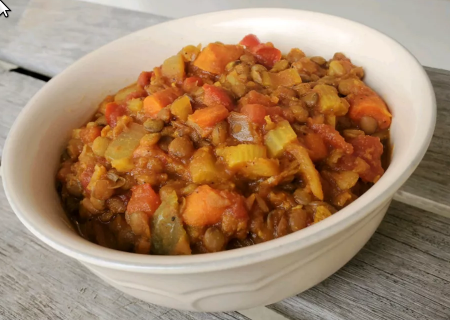

Vegetarian Lentil Stew

The one that makes you think of home!
A hearty vegetarian lentil stew that's delicious, inexpensive, and goes a long way. Even if you're not a vegetarian, it makes a fulfilling, delicious meal. A nice crusty bread goes well on the side. Great to bring to work. This is a bulk recipe that keeps well refrigerated and reheats very nicely. Don't be afraid to scale down if need be.
Ingredients
- 5 cups water
- 1 (16 ounce) package dry lentils, rinsed and drained
- 1 ½ cups dry white wine
- 3 cups chopped carrots
- 3 cups chopped celery
- 2 cups vegetable broth
- 1 (16 ounce) can diced tomatoes
- 1 ½ cups chopped onion
- 1 ½ cups chopped bell pepper
- 1 ½ cups chopped cabbage
- 3 tablespoons brown sugar
- 1 ½ tablespoons chopped garlic
- 1 ½ tablespoons onion powder
- 1 ½ teaspoons ground cumin
Directions
- Bring water and lentils to a boil in a large saucepan. Cover, reduce heat to low, and simmer until tender, 15 to 20 minutes. Increase heat to high, add wine, and let it sizzle and bubble for 1 minute. Reduce heat to medium-low, cover, and simmer for 3 minutes..
- Stir in carrots, celery, vegetable broth, diced tomatoes, onion, bell pepper, cabbage, tomato paste, brown sugar, curry powder, garlic, onion powder, salt, pepper, and cumin. Cook, stirring frequently, until flavors are well blended and vegetables are tender, 45 minutes to 1 hour..
Back to main page